2 Plot continuous data
For appropriate plotting of continuous data, such as age, clinical measurements, and distance.
2.1 Overview
Overview
Ggplot2, part of the Tidyverse family, is a fantastic and versatile package for visualising continuous data. As usual, R also has built-in functions, which can be helpful for quick looks at the data.
Visualisations covered here include:
- Plots for one continuous variable:
- Histograms, the classic graph to present the distribution of a continuous variable.
- Box plots (also called box and whisker), in which the box represents the 25th, 50th, and 75th percentile of a continuous variable, and the line outside of this represent tail ends of distribution of the the continuous variable, and dots represent outliers.
- Violin plots, which are similar to histograms in that they show the distribution of a continuous variable based on the symettrical width of the ‘violin’.
- Jitter plots, which visualise the distribution of a continuous variable by showing all values as dots, rather than collectively as one larger shape. Each dot is ‘jittered’ so that they can all (mostly) be seen, even where two have the same value.
-
Sina plots, are a cross between jitter and violin plots, where the individual points can be seen but in the symmetrical shape of the distribution (note this brings in the
ggforcepackage).
- Scatter plots for two continuous variables.
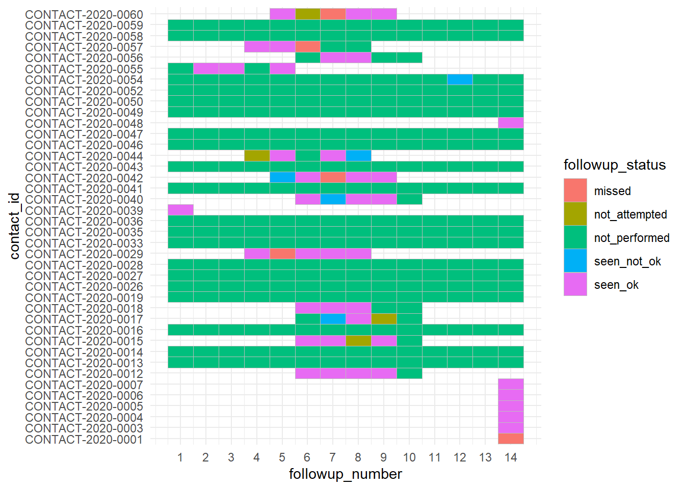 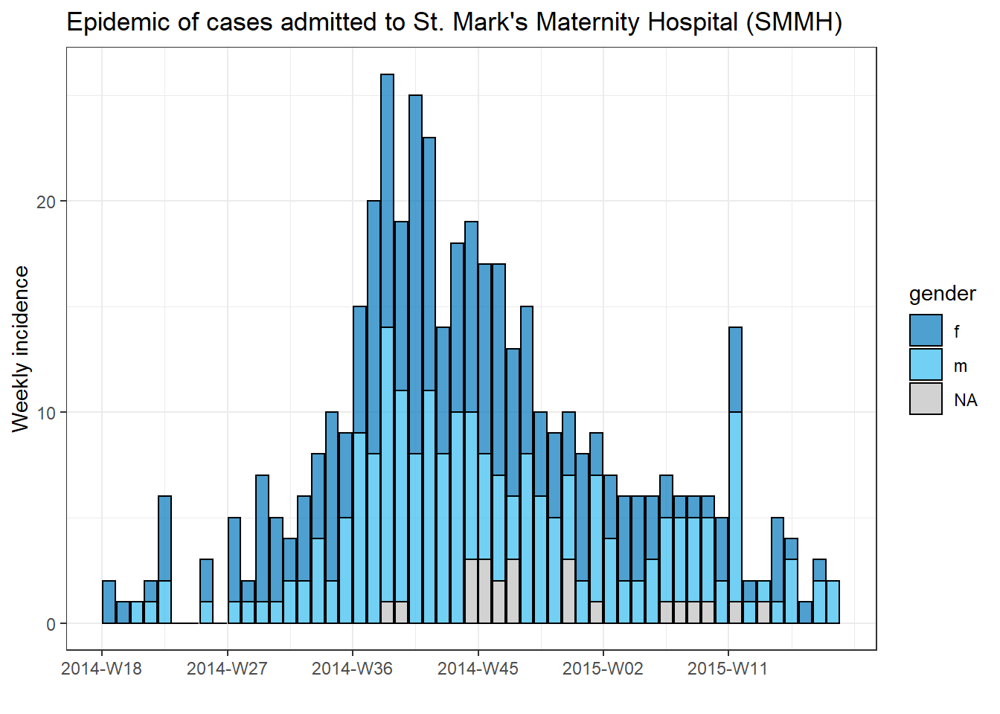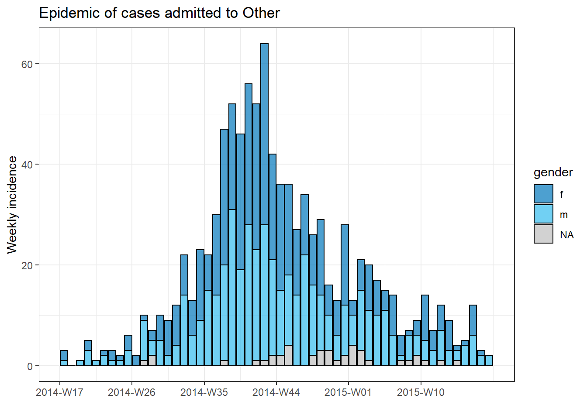
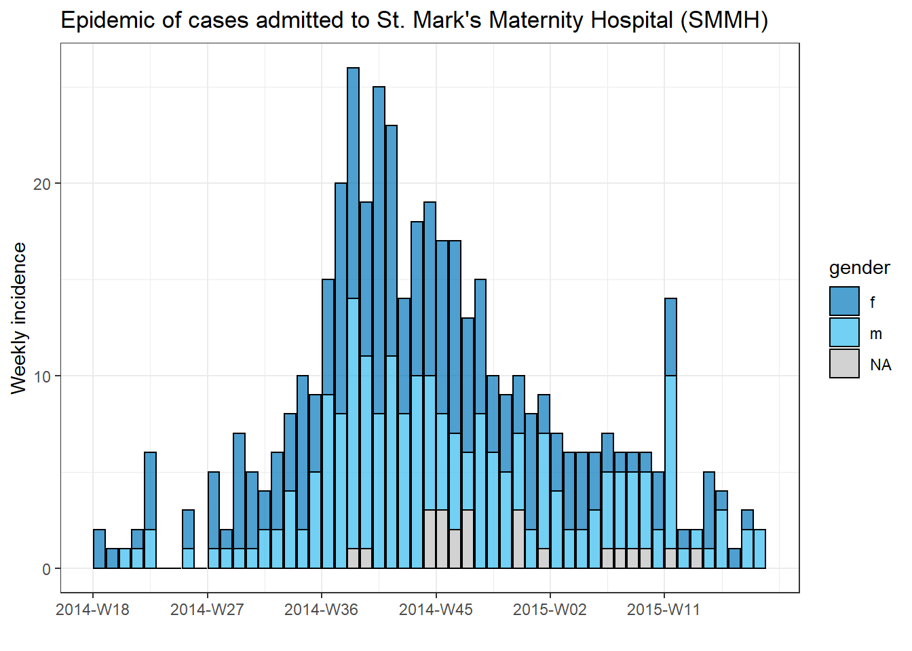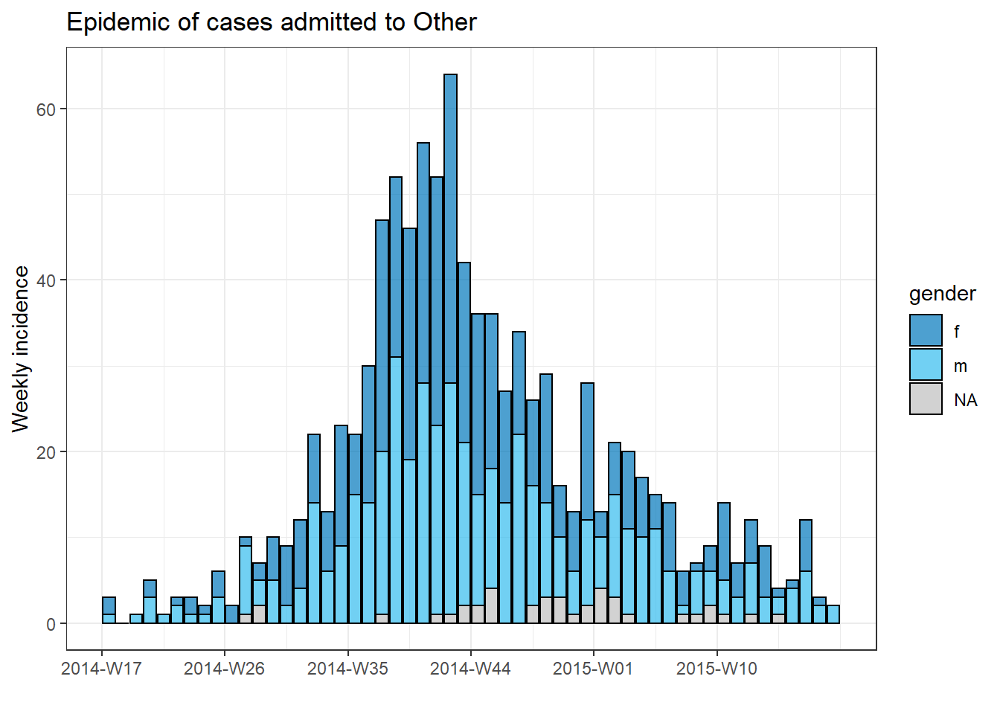
2.2 Preparation
Preparation
Preparation includes loading the relevant packages, here ggplot2 and dplyr, and ensuring your data is the correct class and format. For the examples in this section, we use the simulated Ebola linelist, focusing on the continuous variables age, wt_kg (weight in kilos), ct_blood (CT values), and days_onset_hosp (difference between onset date and hospitalisation).
Note: You could load just tidyverse, which includes ggplot2 and tidyverse among other packages (stringr, tidyr, for instance).
pacman::p_load(ggplot2,
dplyr)
linelist <- rio::import(here::here("data", "linelist_cleaned.rds")) %>% #Load the data
mutate(age = as.numeric(age),
ct_blood = as.numeric(ct_blood),
days_onset_hosp = as.numeric(days_onset_hosp),
wt_kg = as.numeric(wt_kg)) # Converting vars to numeric as examples You should have conducted various data checks before this point, including checking the missingness of the data.
2.3 Plotting with ggplot2
Plotting with ggplot2
2.3.1 Code syntax
Ggplot2 has extensive functionality, and the same code syntax can be used for many different plot types.
A basic breakdown of the ggplot code is as follows:
ggplot(data = linelist)+
geom_XXXX(aes(x = col1, y = col2),
fill = "color") -
ggplot()starts off the function. You can specify the data and aesthetics (see next point) within the ggplot bracket, unless you are combining different data sources or plot types into one -
aes()stands for ‘aesthetics’, and is where the columns used for the visualisation are specified. For instanceaes(x = col1, y = col2)to specify the data used for the x and y values (where y is the continuous variable in these examples). -
fillspecifies the colour of the boxplot areas. One could also writecolorto specify outline or point colour. -
geom_XXXspecifies what type of plot. Options include:-
geom_boxplot()for a boxplot -
geom_histogramfor a histogram -
geom_violin()for a violin plot -
geom_jitter()for a jitter plot -
geom_point()for a scatter plot -
geom_sina()for a jitter plot where the width of the jitter is controlled by the density distribution of the data within each class
-
Note that the aes() bracket can be within the ggplot() bracket or within the specific geom_XXX bracket. If you are layering different ggplots with diferent aesthetics, you will need to specify them within each geom_XXX.
For more see section on ggplot tips. We also walk through further customisation below.
2.3.2 Plotting one continuous variable
Box plots
Below is code for creating box plots, to show the distribution of CT values of Ebola patients in an entire dataset and by sub group. Note that for the subgroup breakdowns, the ‘NA’ values are also removed using dplyr, otherwise ggplot plots the age distribution for ‘NA’ as a separate boxplot.
# A) Simple boxplot of one numeric variable
ggplot(data = linelist, aes(y = ct_blood))+ # only y variable given (no x variable)
geom_boxplot()+
labs(title = "A) Simple ggplot2 boxplot")
# B) Box plot by group
ggplot(data = linelist %>% filter(!is.na(outcome)),
aes(y = ct_blood, # Continous variable
x = outcome)) + # Grouping variable
geom_boxplot(fill = "gold")+ # Create the boxplot and specify colour
labs(title = "B) ggplot2 boxplot by gender") 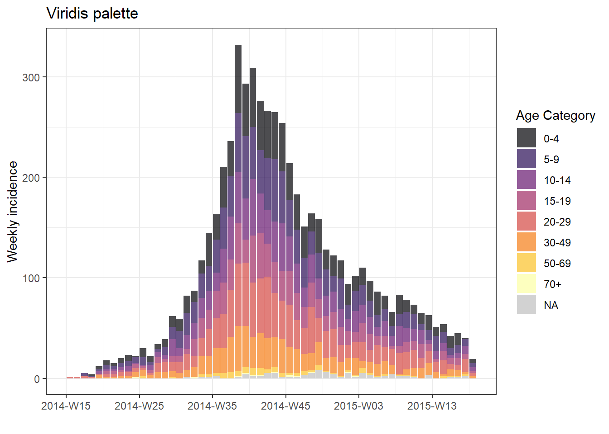
Histograms
Below is code for generating histograms, to show the distribution of CT values of Ebola patients. Within the aes() bracket, you specify which variable you want to see the distribution of. You can supply either the x or the y, which will change the direction of the plot. The y or the x respectively will then show the count, represented by columns referred to as ‘bins’.
# A) Regular histogram
ggplot(data = linelist, aes(x = ct_blood))+ # provide x variable
geom_histogram()+
labs(title = "A) Simple ggplot2 histogram")
# B) Histogram with values across y axis
ggplot(data = linelist, aes(y = ct_blood))+ # provide y variable
geom_histogram()+
labs(title = "B) Simple ggplot2 histogram with axes swapped")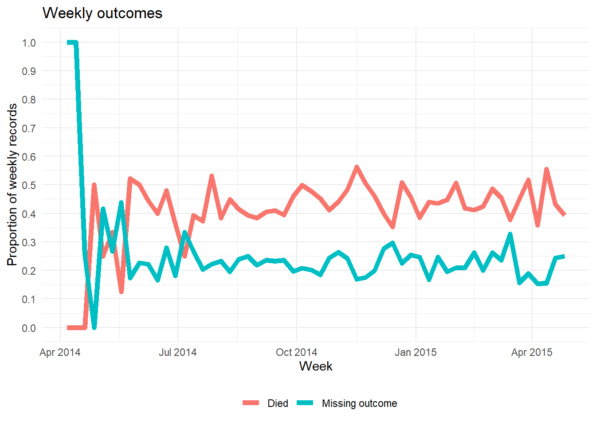
In the examples above, R has guessed the most appropriate way to present the data, and issues a message to tell you how many bins (columns) it went with, and to prompt you to customise it yourself:
## `stat_bin()` using `bins = 30`. Pick better value with `binwidth`.It used 30 bins, and they look spaced out because some of them have 0 values. This relates to the way the values have been rounded.
To change this, you can specify binwidth (e.g. the range of values that the bin is counting) or bins (the number of bins) within the geom_histogram argument. These are then evenly grouped, between the minimum and maximum values of the histogram.
# A) Histogram with specified bin number
ggplot(data = linelist, aes(x = ct_blood))+ # Provide x variable
geom_histogram(bins=10, # Add bin number
color = "white")+ # Add white outline so bars can easily be distinguished
labs(title = "A) Ggplot histogram with 10 bins")
# B) Histogram with specified bin width
ggplot(data = linelist, aes(x = ct_blood))+ # Provide y variable
geom_histogram(binwidth = 1, # Each bar includes a CT value range of 1
color = "white")+ # Add white outline so bars can easily be distinguished
labs(title = "B) Ggplot histogram with bindwidth of 1")

Rather than counts, you can change the stats within the aes() bracket to specify proportions - see (plot A) below. You can also layer different histograms with different settings (plot B).
# A) Histogram with proportion
ggplot(data = linelist, aes(x = ct_blood, # provide x variable
y = stat(density)))+ # Calculate proportion
geom_histogram(bins=10, # Add bin number
color = "white")+ # Add white outline so bars can easily be distinguished
labs(title = "A) Ggplot histogram showing proportion")
# B) Layered histograms with different bin widths
ggplot(data = linelist, aes(x = ct_blood))+ # provide x variable
geom_histogram(binwidth = 2) + # Underlying layer has binwidth of 2
geom_histogram(binwidth = 1, # Top layer has binwidth of 1
alpha = 0.4, # Set top layer to be slightly see through
fill = "blue")+
labs(title = "B) Layered ggplot histograms")

Violin, jitter, and sina plots
Below is code for creating violin plots (geom_violin) and jitter plots (geom_jitter) to show age distributions. One can specify that the ‘fill’ or ’color’is also determined by the data, thereby inserting these options within the aes bracket.
# A) Violin plot by group
ggplot(data = linelist %>% filter(!is.na(outcome)),
aes(y = age, # Continuous variable
x = outcome, # Grouping variable
fill = outcome))+ # fill variable (color of boxes)
geom_violin()+ # create the violin plot
labs(title = "A) ggplot2 violin plot by gender")
# B) Jitter plot by group
ggplot(data = linelist %>% filter(!is.na(outcome)),
aes(y = age, # Continuous variable
x = outcome, # Grouping variable
color = outcome))+ # Color variable
geom_jitter()+ # Create the violin plot
labs(title = "B) ggplot2 jitter plot by gender")  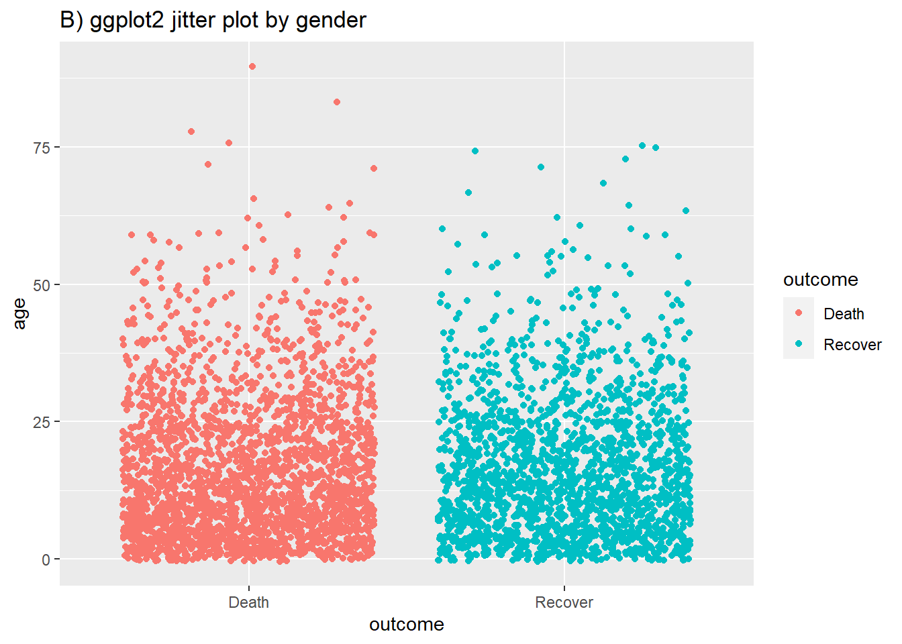
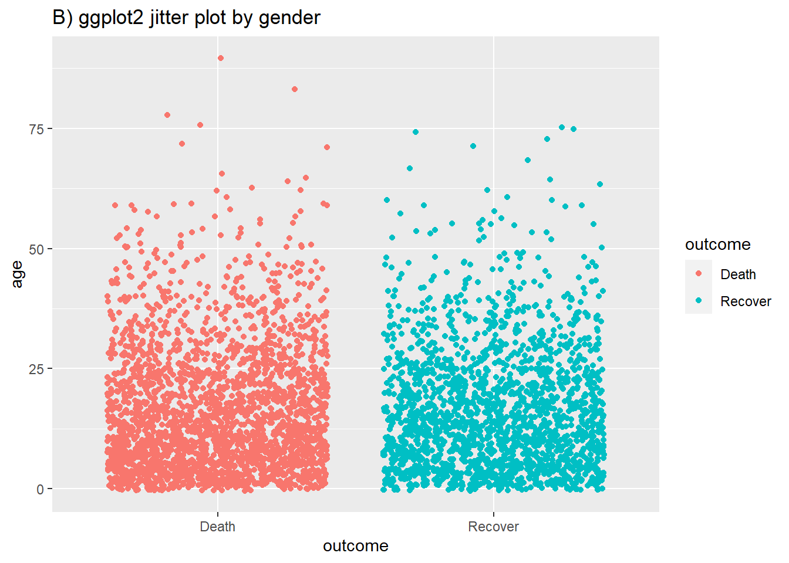
One can combine the two using the geom_sina option, which is actually part of the ggforce package. This can be easier to visually interpret. A) on the left shows basic layering of both a geom_violin and geom_sina. B) shows slightly more effort put into the appearance of the ggplot (see in-line comments).
pacman::p_load(ggforce)
# A) Sina plot by group
ggplot(data = linelist %>% filter(!is.na(outcome)),
aes(y = age, # numeric variable
x = outcome)) + # group variable
geom_violin()+ # create the violin plot
geom_sina()+
labs(title = "A) ggplot() violin and sina plot by gender")
# A) Sina plot by group
ggplot(data = linelist %>% filter(!is.na(outcome)),
aes(y = age, # numeric variable
x = outcome)) + # group variable
geom_violin(aes(fill = outcome), # fill variable (color of violin background)
color = "white", # Plot has white outline rather than default black
alpha = 0.2)+ # Alpha value where 0 transparent to 1 opaque
geom_sina(size=1, # Change the size of the jitter
aes(color = outcome))+ # color variable (color of dots)
scale_fill_manual(values = c("Death" = "#bf5300",
"Recover" = "#11118c")) + # Define colours for death/recover
# (but note they will come out a bit transparent)
scale_color_manual(values = c("Death" = "#bf5300",
"Recover" = "#11118c")) + # Define colours for death/recover
theme_minimal() + # Remove the gray background
theme(legend.position = "none") + # Remove unnecessary legend
labs(title = "B) ggplot() violin and sina plot by gender with formatting")  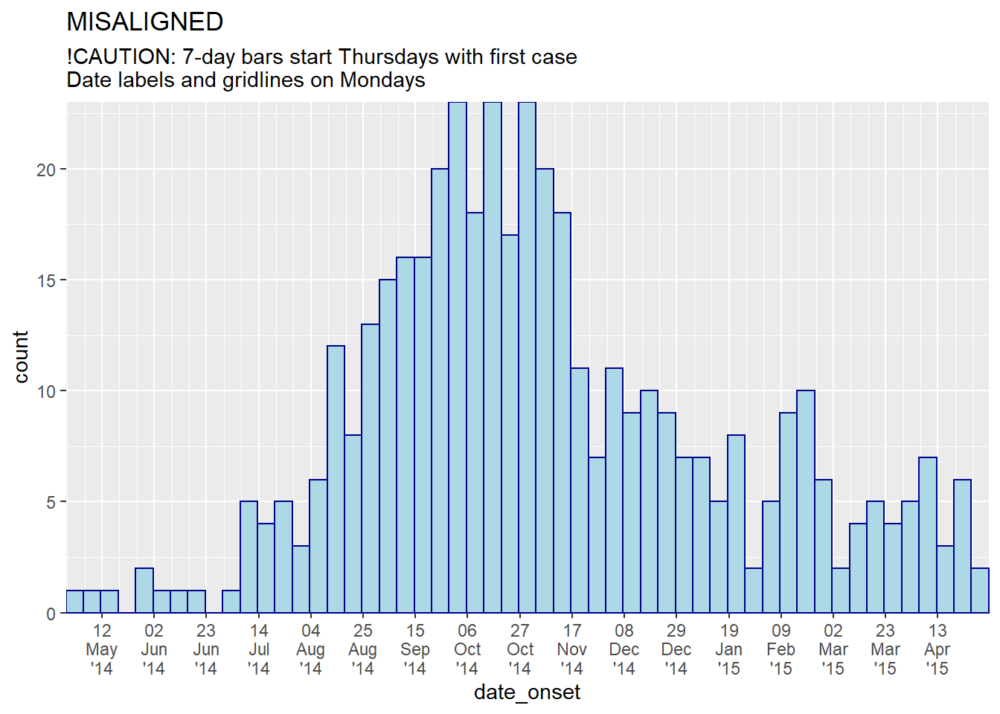
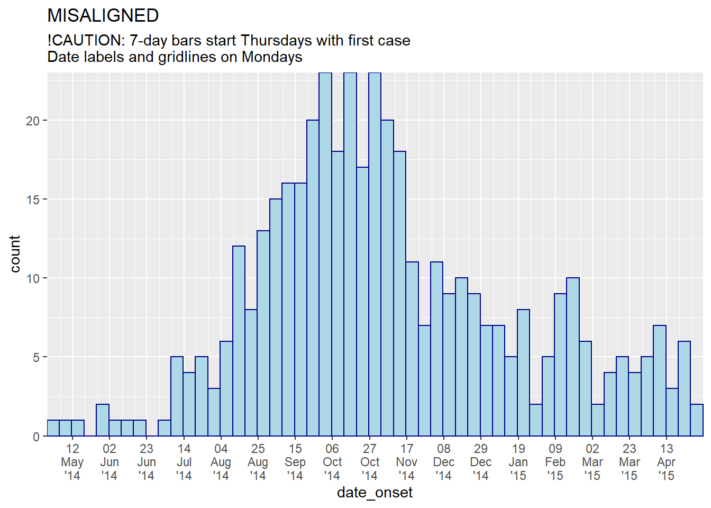
2.3.3 Plotting one continuous variable within facets
Faceting basics
To examine further subgroups, one can ‘facet’ the graph. This means the plot will be recreated within specified subgroups. One can use:
-
facet_wrap()- this will recreate the sub-graphs and present them alphabetically (typically, unless stated otherwise). You can invoke certain options to determine the look of the facets, e.g.nrow=1orncol=1to control the number of rows or columns that the faceted plots are arranged within. See plot A below. -
facet_grid()- this is suited to seeing subgroups for particular combinations of discrete variables. See plot B below.nrowandncolare not relevant, as the subgroups are presented in a grid, with the subgroups always in the x or y axis (see notes in code below)
You can stipulate up to two faceting variables, with a ‘~’ between them. If only one faceting variable, a ‘.’ is used as a placeholder for a non-used second faceting variable - see code examples.
# A) Histogram of hospitalisation dates faceted by hospital
ggplot(data = linelist %>%
filter(hospital != "Missing"), # filter removes unknown hospital
aes(x = date_hospitalisation ))+
geom_histogram(binwidth=7) + # Bindwidth = 7 days
labs(title = "A) Ggplot 2 histogram of hospitalisation dates by hospital")+
facet_wrap(hospital~., # Facet by just hospital
ncol = 2) # Facet in two columns
# B) Boxplot of age faceted in a grid with two variables, gender and outcome
ggplot(data = linelist %>%
filter(!is.na(gender) & !is.na(outcome)), # filter retains non-missing gender/outcome
aes(y = age))+
geom_boxplot()+
labs(title = "A) A Ggplot2 boxplot by gender and outcome")+
facet_grid(outcome~gender) # Outcome is the row, gender is the column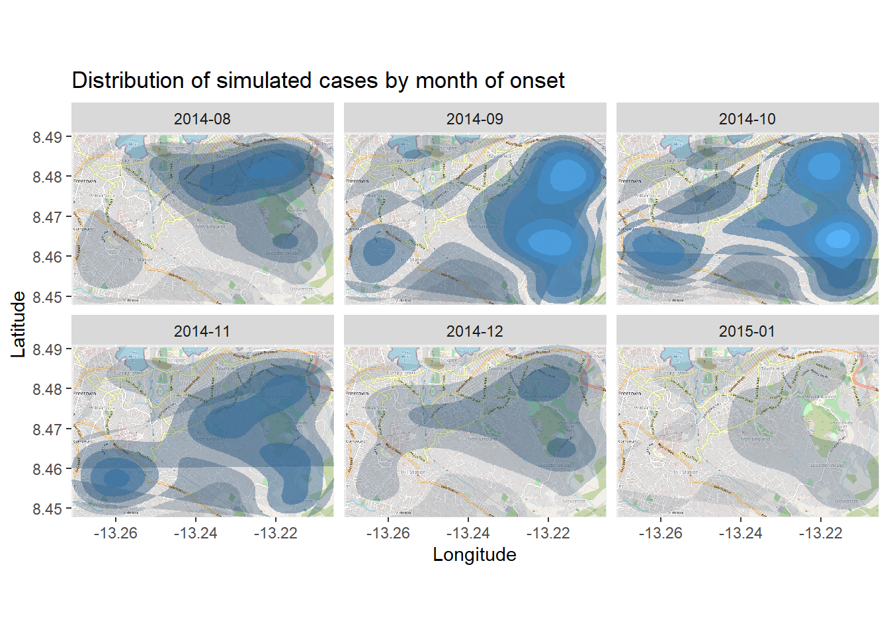
Further faceting options
The scales used when facetting are consistent across subgroups, which is helpful for comparisons, but not always appropriate or optimal.
When using facet_wrap or facet_grid, we can add scales = "free_y" (plot A) so that the heights of the faceted histograms are standardised and the shapes are easier to compare. This is particularly useful if the actual counts are small for one of the subcategories and trends are otherwise hard to see. Instead of free_y we can also write free_x to do the same for the x axis or free for both axes. Note that in facet_grid, the y scales will be the same for facets in the same row, and the x scales will be the same for facets in the same column.
When using facet_grid only, we can add space = "free_y" or space = "free_x" so that the actual height or width of the facet is weighted to the values of the figure within. This only works if scales = "free" (y or x) already applies.
# A) Facet hospitalsation date by hospital, free y axis
ggplot(data = linelist %>% filter(hospital != "Missing"), # filter removes unknown hospital
aes(x = date_hospitalisation ))+
geom_histogram(binwidth=7) + # Bindwidth = 7 days
labs(title = "A) Histogram with free y axis scales")+
facet_grid(hospital~., # Facet with hospital as the row
scales = "free_y") # Free the y scale of each facet
# B) Facet hospitalisation date by hospital, free y axis and vertical spacing
ggplot(data = linelist %>% filter(hospital != "Missing"), # filter removes unknown hospital
aes(x = date_hospitalisation ))+
geom_histogram(binwidth=7) + # Bindwidth = 7 days
labs(title = "B) Histogram with free y axis scales and spacing")+
facet_grid(hospital~., # Facet with hospital as the row
scales = "free_y", # Free the y scale of each facet
space = "free_y") # Free the vertical spacing of each facet to optimise space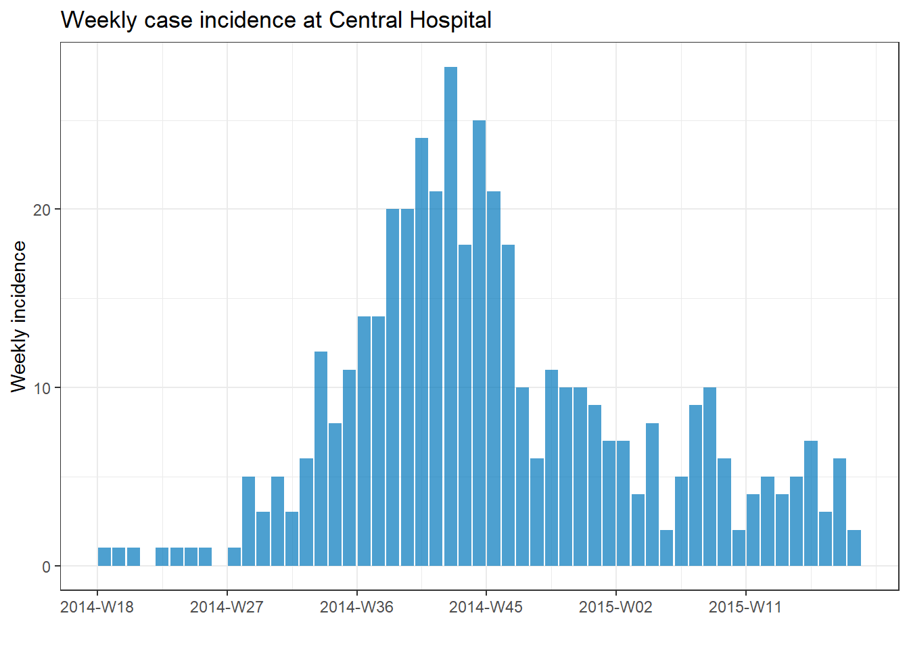
2.3.4 Plotting two continuous variables
Following similar syntax, geom_point will allow one to plot two continuous variables against eachother in a scatter plot. This is useful for showing actual values rather than their distributions.
A basic scatter plot of age vs weight is shown in (A). In (B) we again use facet_grid to show the relationship between two continuous variables in the linelist.
# Basic scatter plot of weight and age
ggplot(data = linelist,
aes(y = wt_kg, x = age))+
geom_point() +
labs(title = "A) Scatter plot of weight and age")
# Scatter plot of weight and age by gender and Ebola outcome
ggplot(data = linelist %>% filter(!is.na(gender) & !is.na(outcome)), # filter retains non-missing gender/outcome
aes(y = wt_kg, x = age))+
geom_point() +
labs(title = "B) Scatter plot of weight and age faceted by gender and outcome")+
facet_grid(gender~outcome) 

2.4 Plotting with base graphics
In-built graphics package
Using base graphics can sometimes be quicker than ggplot, and is helpful for that initial first look.
2.4.1 Plotting one continuous variable
Box plots and histograms
The in-built graphics package comes with the boxplot() and hist() functions, allowing straight-forward visualisation of a continuous variable.
# Boxplot
boxplot(linelist$wt_kg,
main = "A) Base boxplot")
# Histogram
hist(linelist$wt_kg,
main = "B) Base histogram") 

Further customisation
Subgroups can also be shown, by subgroup or crossed groups. Note how with plot B below, outcome and gender are written as outcome*gender such that the boxplots are for the four combinations of the two columns. They do not get facetted across different rows and columns like in ggplot2.
We specify linelist as the dataset so we do not need to write age as linelist$age
# Box plot by subgroup
boxplot(age ~ outcome,
data = linelist,
main = "A) Base boxplot by subgroup")
# Box plot by crossed subgroups
boxplot(age ~ outcome*gender,
data = linelist,
main = "B) Base boxplot) by crossed groups")

Some further options with boxplot() shown below are:
- Boxplot width proportional to sample size (A)
- Violin plots, with notched representing the median and x around it (B)
- Horizontal (C)
# Varying width by sample size
boxplot(linelist$age ~ linelist$outcome,
varwidth = TRUE, # width varying by sample size
main="A) Proportional boxplot() widths")
# Notched (violin plot), and varying width
boxplot(age ~ outcome,
data=linelist,
notch=TRUE, # notch at median
main="B) Notched boxplot()",
col=(c("gold","darkgreen")),
xlab="Suppliment and Dose")
# Horizontal
boxplot(age ~ outcome,
data=linelist,
horizontal=TRUE, # flip to horizontal
col=(c("gold","darkgreen")),
main="C) Horizontal boxplot()",
xlab="Suppliment and Dose")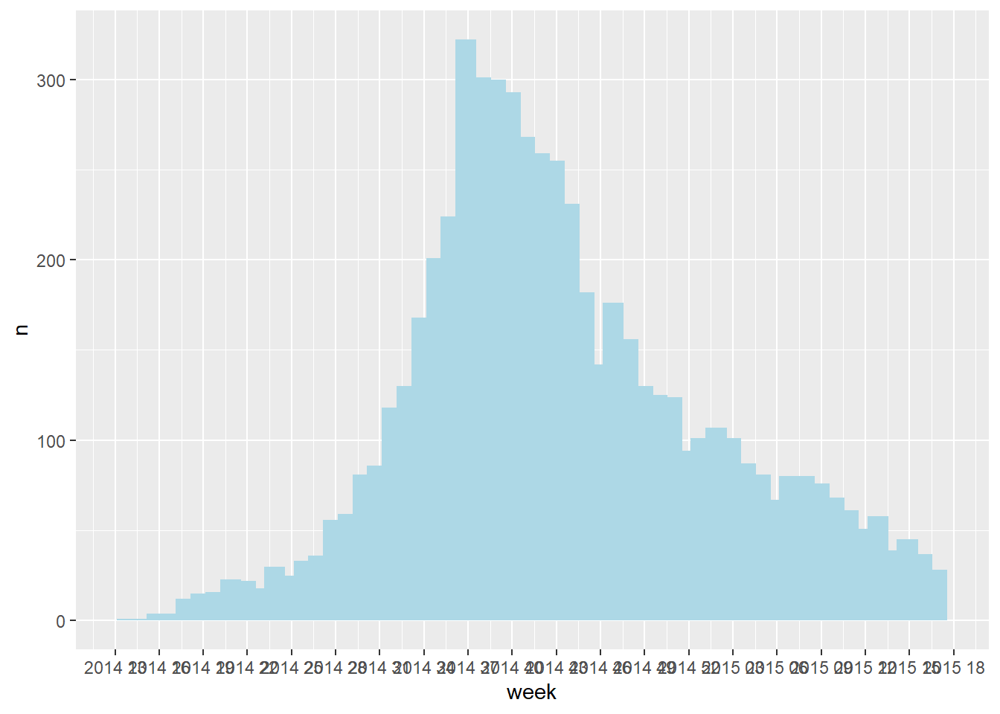

2.4.2 Plotting two continuous variables
Using base R, we can quickly visualise the relationship between two continuous variables with the plot function.
plot(linelist$age, linelist$wt_kg)